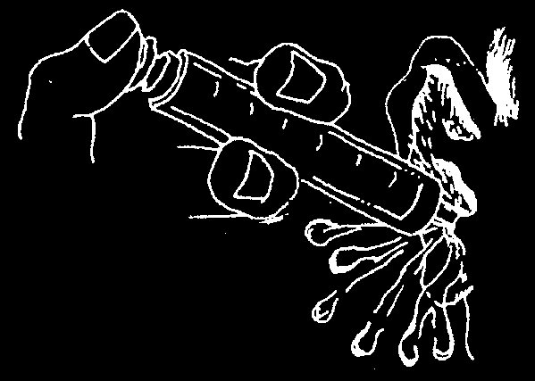
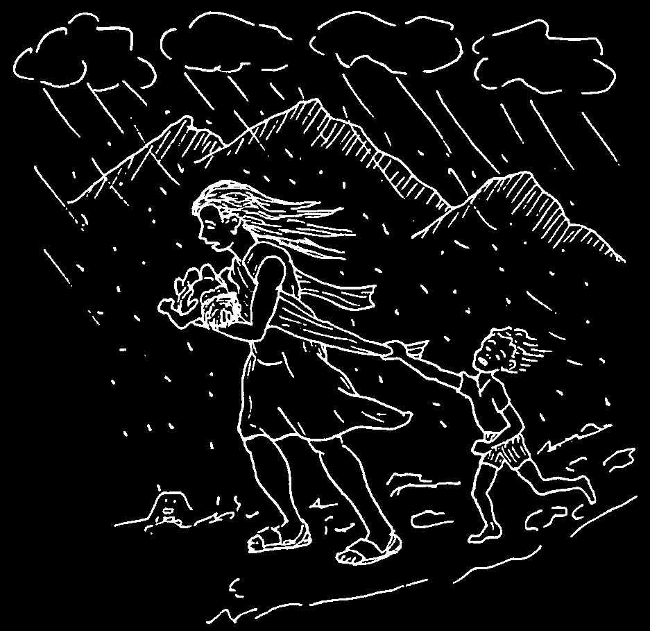
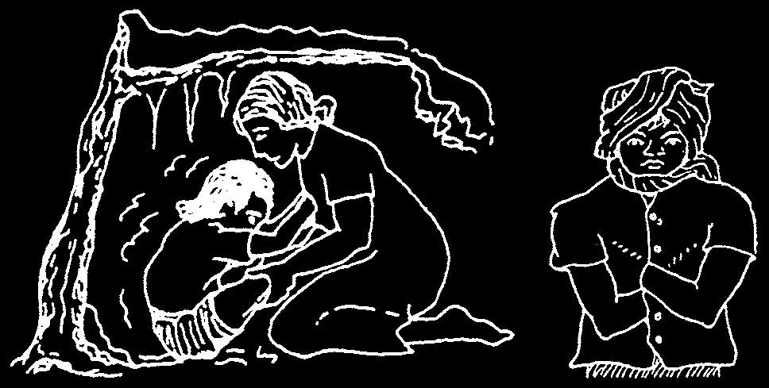
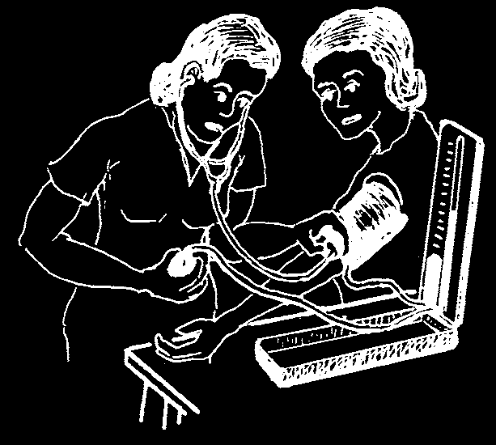
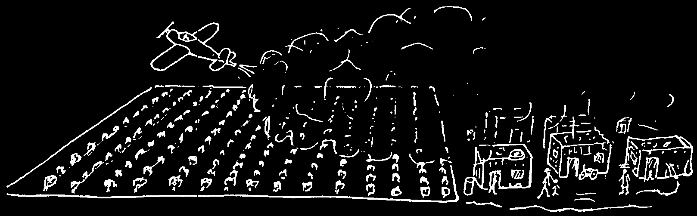
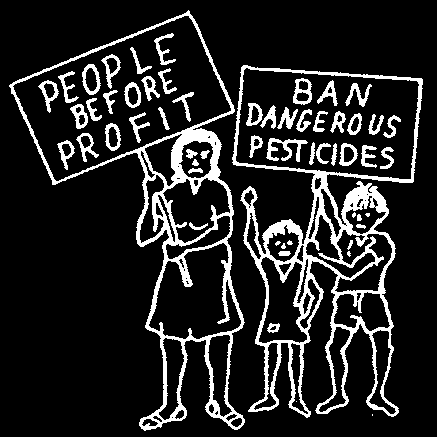
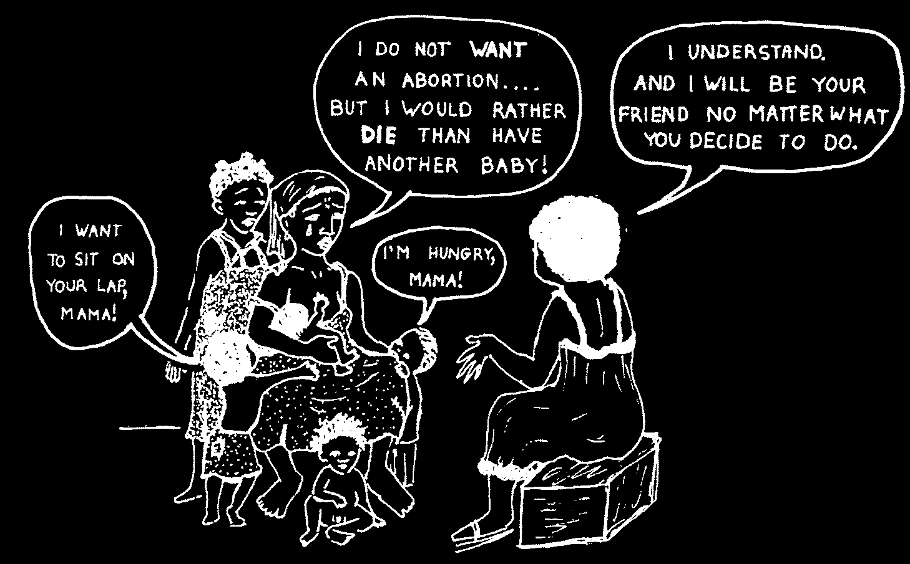
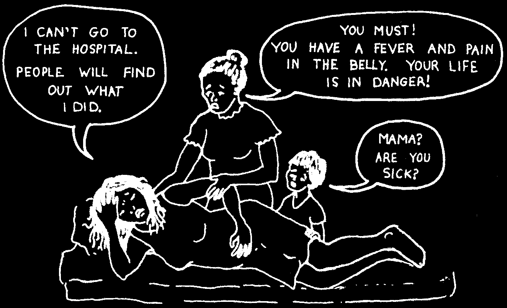
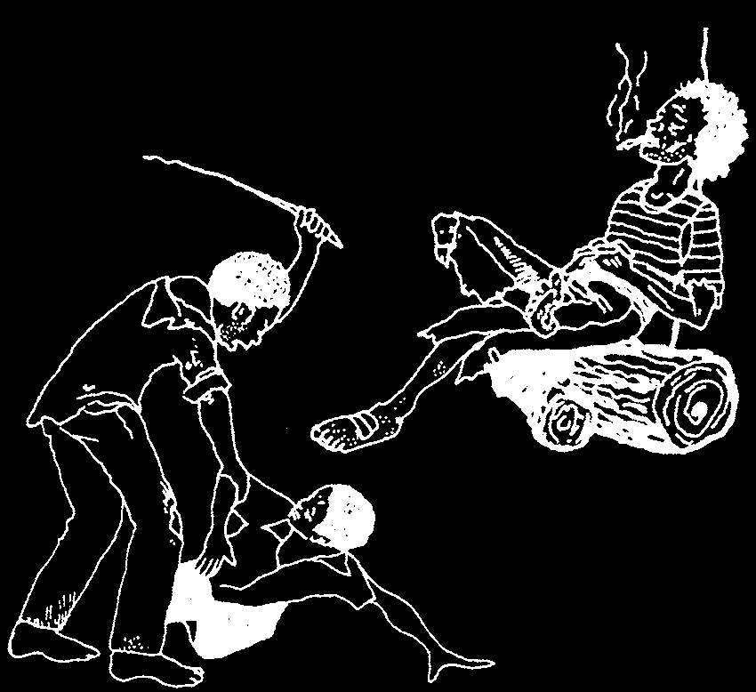

Genital Herpes
Genital herpes is a painful skin infection caused by a virus. Small blisters appear on the sex parts. Genital herpes is spread from person to person during sex. Genital herpes occasionally appears on the mouth from oral sex. But it is different from the kind of herpes that commonly occurs on the mouth, which is often not spread by sex
(see Cold Sores, p. 232).


Signs:
• One or more very small, painful blisters, like drops of water on the skin, appear on the genitals, anus, buttocks or thighs.
• The blisters burst and form small, open sores that are very painful.
• The sores dry up and become scabs.
on a man on a woman
The herpes sores can last for 3 weeks or more, with fever, aches, chills, and swollen lymph nodes in the groin. There may be pain when the woman pees.
The virus stays in the body after all the signs disappear. New blisters can appear at any time, from weeks to years later. Usually the new sores appear in the same place, but are fewer, not as painful, and heal more quickly.
Treatment:
There is no medicine that cures herpes, but it can be controlled with acyclovir
(see p. 373). Keep the area clean. Do not have sex until all the sores are healed— not even with a condom.
Always wash hands with soap and water after touching the sores. Be very careful not to touch the eyes. A herpes infection in the eyes can cause blindness.
CAUTION: If a woman has herpes sores when she gives birth, her baby can get it. This is very dangerous. Let your health worker or midwife know if you have ever had genital herpes.
Chancroid
Signs:
• soft, painful sores on the genitals or anus
• enlarged lymph nodes (bubos)
may develop in the groin
Treatment:
on a man on a woman
♦ Give 1 g. of azithromycin by mouth in 1 dose, or erythromycin 500 mg. by mouth, 4 times daily for 7 days, or ciprofloxacin 500 mg. by mouth 2 times a day for 3 days. You can also give ceftriaxone, 250 mg. by intramuscular injection, as a single dose. Pregnant women and children should not take ciprofloxacin.
♦ Generally, it is best to treat for syphilis at the same time (see p. 237).

CIRCUMCISION AND EXCISION (CUTTING AWAY SKIN FROM THE SEX PARTS)
In many communities, boy children are circumcised—as are girls in some parts of the world—as a traditional 'practice’ or 'custom’. Circumcision is not necessary for health, although male circumcision may provide some protection against HIV. For boys it is usually not dangerous. But for girls, this practice—sometimes called 'excision’,
'infibulation’, or 'female genital cutting’—is very dangerous and should be strongly discouraged. For both boys and girls, unclean cutting tools risk spreading HIV.
BOYS
A baby boy is born with a tube of skin (foreskin) covering the 'head’ of his penis. As long as urine comes out of the hole at the tip, there should be no problem. The foreskin will usually not pull back completely over the head of the penis until the boy is about
4 years old. This is normal and circumcision is not necessary. Do not try to pull the foreskin back by force.
However, if the foreskin becomes red, swollen, and so tight that the baby cannot pass urine without pain, this is not normal. Take him to a health worker for a circumcision as soon as possible.
As a family ritual, simple circumcision of a healthy baby boy may be done by a midwife or person with experience. Using a new razor, she cuts off a little of the foreskin beyond the head of the penis. After the cut, there is some bleeding. Hold the penis firmly with a clean cloth, or gauze, for 5 minutes, until the bleeding stops. Some healers use the juice of a plant to help stop the bleeding (see p. 13).
baby’s pull upward on penis the foreskin head of penis
(be sure not tip of penis to cut it)
line of cut can now be seen
If the bleeding does not stop, wash away the clots of blood with clean water, and pinch the end of the foreskin between the fingers with a piece of clean cloth for as long as it takes the bleeding to stop. No medicine is needed.
GIRLS
In circumcision of girls, or 'excision’, the soft knob of flesh (clitoris) at the front end of the vagina is cut out. Sometimes, part of the vaginal lips is also cut away. Removing the clitoris is as bad as cutting off the head of a boy’s penis. Excision should not be done. Girls who have been excised may have frequent urinary and vaginal infections, and difficulty during childbirth.
There is also danger of severe bleeding during excision. The child can die in a few minutes. Act quickly. Wash away the clots to find the exact point where the blood is coming from and press on it firmly for 5 minutes. If bleeding continues, keep pressing the bleeding spot while you carry the child to a health worker or doctor for help. Watch for signs of shock (see page 77) and infection.


SPECIAL CARE FOR SMALL, EARLY, AND UNDERWEIGHT BABIES—'KANGAROOING’
A baby who is born very small (weighs less than 2 ½ kg. or 5 pounds) will need special care. If possible, take the baby to a health post or hospital. In the hospital, these babies are often kept warm and protected in a special temperature–controlled box called an incubator. However, for a baby who is basically healthy, a mother can often provide similar warmth and protection by 'kangarooing’ the baby:
♦ Place the baby naked, with or without a diaper or nappy, upright inside your clothing against your skin, between your breasts. (It helps to wear a loose blouse, sweater, or wrap tied at the waist.)
♦ Let the baby suck at your breast as often as he wants, but at least every 2 hours.
♦ Sleep propped up so that the baby stays upright.
♦ Wash the baby’s face and bottom each day.
♦ Make sure the baby stays warm at all times.
If it is cool, dress the baby with extra clothing, and cover his head.
♦ While you bathe or rest, ask the father, or another family member, to 'kangaroo’
the baby.
♦ Take the baby to a health worker regularly. Be sure that he gets all his vaccinations (see p. 147).
♦ Give the baby iron and vitamin supplements—especially vitamin D
(see p. 392).
EAR WAX
A little wax in the ears is normal. But some people have too much wax, or it dries into a hard lump close to the ear drum. This can block the ear canal so that the person cannot hear well.
Treatment:
To remove the wax, first soften it by putting several drops of warm vegetable oil into the person’s ear. Then have her lie down on her side with the ear up for
15 minutes. Next, wash the ear out well by pouring several cups of warm (not hot)
water into it.
If this does not work, remove the needle from a syringe and fill the syringe with warm water and squirt it into the ear canal. Repeat this several times, or until the wax comes out. Stop if the person starts to feel dizzy. If the wax still will syringe not come out, seek medical advice.
without needle

LEISHMANIASIS
This disease is found in Africa, India, and the Middle East, and in southern Mexico,
Central America and South America. The infection is carried from person to person by a small sand fly which infects a person when it bites.
Some forms of the disease cause damage inside the body (visceral leishmaniasis, kala–azar, dumdum fever). These are very difficult to recognize and the treatment is very complicated and expensive. If possible, seek medical help.
Other forms affect mainly the skin (cutaneous leishmaniasis, tropical sore, Delhi boil, espundia, forest yaws, uta, chiclero ulcer). These are easier to treat.
Signs of leishmaniasis of the skin:
• 2 to 8 weeks after being bitten, swelling appears where the fly bit.
• The swelling becomes an open sore, usually with pus.
• Sores can heal by themselves, but may take several weeks to 2 years.
• Sores become infected (with bacteria) very easily.
Treatment:
♦ Clean the sore with cool, boiled water.
♦ Apply a hot, moist cloth to the sore (not so hot that it burns the skin) for 10 to
15 minutes.
♦ Do this 2 times a day for 10 days. This 'heat treatment’ often brings a complete cure.
♦ If the sore looks infected (red and painful), also give antibiotics (see p. 351).
GUINEA WORM
Guinea worm is a long, thin worm that lives under the skin and makes a painful sore on the ankle, leg, or elsewhere on the body. The worm, which looks like a white thread, can be over a meter long. Guinea worm is found in parts of Africa.
Guinea worm is spread from person to person, like this:
1. Infected person with open sore wades into a
3. Another person drinks water hole. The worm some of the water. The pokes its head out fleas, with the worm of the sore and lays eggs, are swallowed.
thousands of eggs into the water.
4. Some of the eggs develop slowly into worms under the skin, but at first the person feels nothing.
2. Tiny
About one year later, a sore forms water-fleas when an adult worm breaks pick up the through the skin to lay worm eggs.
its eggs.


Signs:
• A painful swelling develops on the ankle, leg, testicles or elsewhere on the body.
• After a week a blister forms, which soon bursts open forming a sore. This often happens when standing in water, or bathing. The end of a white thread-like
Guinea worm can be seen poking out of the sore.
• If the sore gets dirty and infected, the pain and swelling spread, and walking becomes impossible. Sometimes tetanus occurs (see p. 182).
Treatment:
♦ Keep the sore clean. Soak the sore in cold water until the worm’s head pokes out.
♦ Attach a thread to the worm, or roll it round
Guinea a thin stick, and pull gently, a little more worm, tied to a each day. This may take a week or more.
thread
The worm can be more than a meter long!
Try not to break it, because this can cause severe infection.
sore
♦ Give metronidazole or thiabendazole to help reduce discomfort and make it easier to slowly pull out the worm. (The medicines do not kill the worms. For dosages and precautions, see p. 369 and 375.)
♦ Give anti-tetanus vaccination (p. 147).
♦ If sores become infected (spreading pain, redness, swelling, and fever), give penicillin or dicloxicillin or a similar antibiotic (see p. 351).
Prevention:
♦ Use tap water for drinking, if available. If a water hole is the only supply, then do not drink from it directly. Pour the water into a special drinking water pot, through a clean cloth tied over the top. The cloth will filter out the infected water-fleas.
♦ If the community can build stone
♦ Or turn the water hole into a well, steps into the water hole, people can so that people can draw water scoop water from the last dry step with a rope and bucket.
without getting wet.
Water low
Water high
ALWAYS USE THE LAST DRY STEP.
NEVER STEP INTO THE WATER.
If nobody wades or bathes in water used for drinking, the infection cannot be passed on, and will eventually disappear from the area.


EMERGENCIES CAUSED BY COLD
Loss of Body Heat (Hypothermia)
In cold climates, or cold, wet or windy weather, persons who are not wearing enough warm clothes can lose the heat from their bodies.
This is very dangerous. Often the person does not realize what is happening and can become so confused that she will not ask for help and may die.
Signs:
• Uncontrolled shivering
• Slow or unclear speech
• Stumbles when walking
• Cannot think clearly
• Feels very tired
Treatment:
♦ Quickly get the person to a dry place protected from the wind.
♦ Take off wet clothes and cover person with dry clothing and dry blankets.
♦ Make sure her head, feet, and hands are covered.
♦ Heat stones in a fire, wrap them in cloth, and put them next to her back and belly.
WARNING: Do not warm up the person too fast as this could cause heart problems and death.
♦ Do all you can to keep the person warm. If it is a child, wrap him inside your clothing against your skin (see 'Kangarooing’, p. 405).
Or sleep with him in your arms. If possible, have someone else lie on the other side. Or put pans of hot coals, or a few small oil lamps pans with hot coals under the cot. (But be careful he does not get burned, or too warm.)
♦ Give sweet things to eat and drink like sugar, candy, honey, ripe fruit or juice. If you do not have sweets, give starchy foods like rice, bread, plantain, or potatoes.
♦ If the person stops breathing, give mouth-to-mouth breathing (see p. 408). Keep giving mouth-to-mouth breathing for at least 1 hour.
If the person stops shivering but still has any of the above signs, or if he is unconscious, his condition is very serious. Keep trying to warm him, but if he does not wake up, get medical help FAST.

Dangerously Low Body Temperature in Babies and
Sick Persons
Sometimes, especially in cool weather, a baby, sick child, or person who is very old, ill, malnourished, or weak may lose so much body heat that their temperature drops below normal. The signs mentioned on the previous page may develop, and the person may die. Try to raise the body temperature by keeping the person warm as described on page 408.
Frozen Skin (Frostbite)
In freezing weather, if a person is not dressed warmly enough, her hands, feet, ears, and sometimes face may begin to freeze. Frostbite is very dangerous. If completely frozen, the skin will die and later turn black (p. 213). The part may have to be cut off (amputated).
Signs of frostbite:
• At first, numbness and often sharp pain in one part of the body.
• Then all feeling goes away as the part gets more frozen.
• The part gets pale in color and feels hard when touched.
Try to cover
Treatment of mild frostbite:
ears and face.
If the skin still feels soft when touched, the person probably has 'mild frostbite’.
Wrap the part with dry cloth and warm it against another part of the person’s own body or someone else’s.
Try to keep moving and get out of the cold as fast as
Warm hands and feet against body.
possible.
Treatment of severe frostbite: CAUTION: Do not start treatment for severe frostbite until you are in a place where the person’s whole body can be kept warm during and after treatment. It is better to let a hand or foot stay frozen for several hours than to let it get warm and then freeze again. When you get to a warm, protected place:
♦ Fill a large container with warm water (not hot) that feels comfortable when you hold your hand in it.
♦ Soak the person’s frozen part in the water until it gets warm.
♦ If the water cools, add more warm water. But take out the person’s hand or foot while you do this. remember, she cannot feel how hot the water is and you can easily burn her.
♦ As it gets warm, the frozen part will become very painful. Give aspirin or codeine (p. 379 and 384).
♦ When it is no longer frozen, the person must stay warm and rest.
♦ Be very gentle with the part that was frozen. Treat as you would a severe wound or burn (p. 96). Seek medical help. Sometimes dead parts of the body must be removed through surgery.


HOW TO MEASURE BLOOD PRESSURE
Blood pressure measurement can be an important skill for health workers and midwives. It is an especially useful tool in examining:
• Pregnant women (see p. 249, 251, and 253).
• Mothers before and during childbirth (see p. 265).
• A person who may be losing a lot of blood from any part of the body, inside or out (see p. 77).
• A person who might be in shock (see p. 77), including allergic shock (see p. 70).
• People over 40.
• People who are too heavy (see p. 126).
• Anyone with signs of heart trouble (p. 325), stroke (p. 327), difficulty breathing, frequent headaches, swelling, diabetes (p. 127), chronic urinary problems
(p. 234), or swollen or painful veins (p. 175).
• Persons known to have high blood pressure (see p. 125).
• Women taking (or planning to take) birth control pills (see p. 288).
There are 2 kinds of instruments for measuring blood pressure:
A blood pressure and the older mercury cuff with a gauge, sphygmomanometer, which shows the level of mercury.
To measure blood pressure:
• Make sure the person is relaxed. Recent exercise, anger, or nervousness can make pressure rise and give a falsely high reading. Explain what you are going to do, so the person is not surprised or frightened.
• Fasten the pressure cuff around the person’s bare upper arm.
• Close the valve on the rubber bulb by turning the screw clockwise.
• Pump the pressure up to more than 200 millimeters of mercury.
• Place the stethoscope over the inside of the elbow.
• Listen carefully for the pulse as you slowly let air out of the cuff. As the needle of the gauge (or the level of mercury) slowly drops, take two readings:

1. Take the first reading the moment you begin to hear the soft thumping of the pulse. This happens when the pressure in the cuff drops to the highest pressure in the artery (systolic or 'top’ pressure). This top pressure is reached each time the heart contracts and forces the blood through the arteries. In a normal person, this top pressure reading is usually around 110 to 120 mm.
2. Continue to slowly release the pressure while listening carefully. Take the second reading when the sound of the pulse begins to fade or disappear.
This happens when the pressure in the cuff drops to the lowest pressure in the artery (diastolic or 'bottom’ pressure). This bottom pressure occurs when the heart relaxes between pulses. It is normally around 60 to 80 mm.
When you record a person’s blood pressure, always write both the top and bottom pressure readings. We say that an adult’s normal blood pressure (BP) is
“120 over 80,” and write it like this:
120 is the top (systolic) reading.
80 is the bottom (diastolic) reading.
For health workers, it may be better to speak of the “top” and “bottom” numbers
(TN and BN), rather than use big, strange words like systolic and diastolic.
If a person’s blood pressure is 160/110, he has seriously high blood pressure and should lose weight (if he is very overweight) or get treatment. A bottom number of over 100 or a top number over 160 usually means the blood pressure is high enough to require attention (diet and perhaps medicine).
Normal blood pressure for an adult is usually around
120/80, but anything from 100/60 to 140/90 can be considered normal.
If a person regularly has low blood pressure, there is no need to worry. In fact, blood pressure on the low side of normal, 90/60 to 110/70, means a person is likely to live long and is less likely to suffer from heart trouble or stroke.
A sudden drop in blood pressure is a danger sign, especially if it falls below 60/40. Health workers should watch for any sudden drop in the blood pressure of persons who are losing blood or at risk of shock (see p. 77).
For more information about blood pressure measurement, see Helping Health
Workers Learn, Chapter 19.


POISONING FROM PESTICIDES
Pesticides are chemical poisons used to kill certain plants (herbicides), fungus
(fungicides), insects (insecticides) or other animals (for example, rat poison). In recent years, the increasing misuse of pesticides has become a big problem in many developing countries. These dangerous chemicals can cause severe health problems.
They can also damage the 'balance of nature’, which in time can lead to smaller harvests.
Many pesticides are extremely dangerous. Villagers often use them without knowing their risks, or how to protect themselves while using them. As a result, many persons become very ill, blind, sterile, paralyzed, or their children may have birth defects. Also, working with these chemicals, or eating foods sprayed with them, sometimes causes cancer.
Chemicals used to kill insects and weeds at first allow farmers who can afford them to produce more crops. But today, pesticide-treated crops often produce smaller harvests than crops produced without pesticides. This happens because pesticides also kill the 'good’ birds and insects that provide a natural control of pests and are beneficial to the soil. Also, as the insects and weeds become resistant, greater quantities and more poisonous kinds of pesticides are needed. So, once
Pesticides also kill farmers begin to use these chemical poisons, they become the beneficial dependent on them.
animals—such as bees and earthworms.
As farmers’ dependency on chemical pesticides and fertilizers goes up, so does the cost. When the smaller, poorer farmers can no longer afford them, they are forced off the land. As the land becomes owned by a few 'giant’ farmers, and more and more people become landless, the number of malnourished and hungry people increases.
The risk of pesticide poisoning is high for these landless, poorly paid farm workers and their families. Many live in open shacks at the edge of fields that are sprayed with pesticides. The poison can easily get into their homes or water supply. This is especially dangerous for small children, who can be seriously harmed by even small amounts of these poisons. Farmers who use backpack sprayers, which often leak, are also at high risk. See A Community Guide to Environmental Health, Chapter 14, for more information.
Landless farm workers and their families, who live in shacks at the edge of the big farms, often suffer from pesticide poisoning.


Laws are needed to prohibit the most dangerous pesticides and to provide clear warnings. Unfortunately, after governments in industrialized countries limited the use of many pesticides, chemical manufacturers began to sell their dangerous products to developing countries, where laws are less strict.
Some of the most dangerous pesticides are aldrin, dieldrin, endrin, chlordane, heptachlor, DDT, DBCP, HCH, BHC, ethylene dibromide (EDB), paraquat, parathion, agent orange (2-4D with 2-4-5T), camphechlor (toxaphene), poentachlorophenyl
(PCP), and chlordimeform. It is very important to read carefully the labels of pesticide containers. Be sure to read the small print, because the pesticide may not be part of the brand name.
WARNING: If you use any pesticide, take the following precautions:
♦ Mix chemicals and load spray equipment carefully.
♦ Stand so that wind blows spray away from you.
♦ Wear protective clothing, covering the whole body.
♦ Wash hands before eating.
mask and glasses
Be sure tank
♦ Wash the whole body and does not change clothes immediately after leak.
gloves spraying.
♦ Wash clothes after spraying.
♦ Do not let wash water get into drinking supply.
clothes that cover arms
♦ Be sure containers with and legs pesticides are clearly marked, boots (not and kept out of children’s reach.
sandals)
Do not use pesticide containers for food or water.
CAUTION: Make sure that children, and women who are pregnant or breastfeeding, stay away from all pesticides.
Treatment for pesticide poisoning:
♦ If the person is not breathing, quickly do mouth-to-mouth breathing (see p. 80).
♦ Follow instructions on p. 103 to make the person vomit, and to give powdered charcoal (or egg whites) to soak up the poison inside the gut. But do not make the person vomit if you do not know what kind of pesticide he was using, or if he swallowed a pesticide with gasoline, kerosene, xylene, or other
'petroleum-based’ liquids.
♦ Remove any pesticide-soaked clothing, and wash skin exposed to pesticide.
The above steps can help to treat the immediate problem of pesticide poisoning. But solving the underlying problem will require:
1. Education for avoiding the most dangerous pesticides, and laws to restrict their use.
2. Farm workers organizing to insist their rights are protected, and safety hazards are corrected.
3. Fairer land distribution.

COMPLICATIONS FROM ABORTION
When a woman takes action to end a pregnancy before a baby is fully enough formed to survive, this is called an abortion. (In this book we use the word 'abortion’
only when the action is planned. The unplanned, natural loss of an unborn child we call a 'miscarriage’.)
Deciding whether or not to have an abortion can be difficult. In making a decision, most women will benefit from warm, respectful advice and friendly support. When abortions are done under sterile conditions in a hospital or clinic by a trained medical worker, they are usually safe for the woman. Abortions are safest when done in early pregnancy.
But when abortions are done at home, by untrained persons, or in unclean conditions, they can be extremely dangerous. In places where abortions are illegal or difficult to get, these 'home’ abortions are often a major cause of death for women between the ages of 12 and 50.
Methods for ending a pregnancy such as putting sticks or other hard objects into the vagina or womb, squeezing the womb, or using modern drugs or plant medicines can cause severe bleeding, infection, and death.
Danger signs following an abortion:
• fever
• pain in the belly
• heavy bleeding from the vagina
If you see these signs in a woman who may have been pregnant, they could be the result of an abortion. But they could also be signs of miscarriage (p. 281), out-of-place pregnancy (p. 280), or pelvic inflammatory disease (p. 243).

Some women with problems following an abortion go for medical help, but are afraid or ashamed to tell what really happened. Others may be too afraid or embarrassed even to seek medical help, especially if the abortion was secret or illegal. They may wait until they are very sick. This delay could be fatal. Heavy bleeding (more than with a normal period) or infection following an abortion is dangerous. Get medical help right away! Meanwhile, do the following:
♦ Try to control bleeding. Follow instructions on p. 281 for bleeding after miscarriage. Give ergonovine (see p. 390).
♦ Treat for shock (see p. 77).
♦ If there are signs of infection, give antibiotics as for Childbirth Fever
(see p. 276).
To prevent illness and death from abortion:
♦ Give antibiotics (ampicillin, p. 352, or tetracycline, p. 355) after any abortion, whether done at home or in a health center. This reduces the risk of infections and dangerous complications.
♦ Prevent unwanted pregnancy. Birth control methods should be available to both women and men (see Chapter 20).
♦ Work to make your community a kinder, better place, especially for women and children. When society guarantees that everyone’s needs are met, fewer women will need to seek abortions.
♦ Abortions done under clean and safe conditions by trained health workers should be available to women free or at low cost. That way women will not need to have dangerous, illegal abortions.
♦ A woman who has any signs of problems after an abortion—whether done at home or in the hospital—should get medical care immediately. To encourage this, doctors and health workers should never make a woman who has had an abortion feel ashamed.
For more information about how to care for a woman after an abortion, see
A Book for Midwives.

DRUG ABUSE AND ADDICTION
The use of harmful, habit-forming drugs is a growing problem in the world today.
Although alcohol and tobacco are legal in most countries, both are habit-forming or 'addictive’ drugs. They contribute to the poor health and death of many millions of people each year. Alcohol abuse causes enormous health, family, and social problems throughout the world. Cigarette smoking has for many years been a major cause of death in rich countries. and is now becoming an even bigger cause of death in poor countries. As more people in the rich countries stop smoking, the tobacco companies have turned to the 'Third World’ as their new and easiest market.
Health problems related to use of alcohol and tobacco are discussed on pages
148 to 149.
In addition to alcohol and tobacco, many people in different parts of the world are using drugs that may be illegal. These vary from place to place, and include marijuana
(weed, pot, grass, sin semilla, mota, hashish, ganja), opium (heroin, morphine, smack), methamphetamine (speed) and cocaine (crack, snow, rock).
An increasing problem among poor children in cities is the sniffing of chemicals, especially glue, but sometimes paint thinner, shoe polish, gasoline, and cleaning fluid. Also, some people misuse medicines—especially certain strong painkillers, stimulants, and
'appetite control’ drugs.
Drugs can be swallowed, injected, smoked, chewed, or sniffed. Different drugs create different effects on the body and mind. Cocaine or kolanuts may make a person feel energetic and happy, but some time later he will feel tired, irritable, and depressed. Some drugs, like alcohol, opium, morphine, and heroin, may at first make a person feel calm and relaxed, but later they may cause him to lose his inhibitions, selfcontrol, or even consciousness. Other drugs, such as marijuana, PCP, LSD, and peyote make a person imagine things that do not exist, or create dream-like fantasies.
WARNING: Use of cigarettes, alcohol, or other drugs by pregnant women can harm their unborn child. Also, injecting drugs using the same needle for more than one person spreads dangerous diseases.
See hepatitis (p. 172) and HIV and AIDS (p. 399).

People usually start taking drugs to escape the hardships, forget the
Drug dependence can cause:
hunger, or calm the pain in their daily
Self-neglect, lives. But once they start, they often become 'hooked’ or addicted. If they try to stop, they become miserable, sick, or violent. In order to get more drugs, they will often commit crimes, go hungry, or neglect their families.
Thus drug use becomes a problem for whole families and communities.
Some drugs such as cocaine and family problems, heroin are very addictive; a person aggression, and violence.
may try the drug only once and feel that he needs to keep taking it. Other drugs become addictive after longer periods of time. Addiction is a dangerous trap that can lead to health problems or even death. But with determination, effort, and support, addictions can be overcome.
When a person first gives up a drug he is addicted to, he will usually feel miserable and act strangely. This is called 'withdrawal’. The person may be extremely nervous, depressed, or angry. He may feel that he cannot live without the drug.
With some drugs, such as heroin or cocaine, withdrawal may be so severe that the person can become violent and injure himself or others. He or she may need the help of a special clinic. For other kinds of drugs, such as alcohol, marijuana, tobacco, and chemical sniffing, medical care is usually not necessary, but the care and support of family and friends is very important.
Here are a few suggestions to help solve the problem of drug use and addiction:
♦ Be as helpful and supportive as possible to someone trying to overcome drug use. remember that their difficult moods are because of their addiction, not because of you.
♦ Members of the community who have been addicted to drugs but have overcome the habit can form a 'support group’ to help others trying to give up alcohol or drugs. Alcoholics Anonymous is one such organization (see p. 429).
This group of recovering alcoholics has successfully helped people all over the world to deal with problems of addiction.
♦ Families, schools, and health workers can tell children about the dangers of cigarettes, alcohol, and drugs. Help children learn that there are other, healthier ways to 'feel good’, to act 'grown up’, or to rebel.
♦ Work to correct some of the problems in your community that may lead people to use drugs: hunger, exploitative working conditions, and lack of opportunities to lead a better life. Help disadvantaged persons organize and stand up for their rights.
Actions that are supportive and kind work better than those that are punishing and cruel.

INFORMATION ON VITAL SIGNS
TEMPERATURE
There are two kinds of thermometer scales: Centigrade (C.) and Fahrenheit (F.).
Either can be used to measure a person’s temperature.
Here is how they compare:
CENTIGRADE
below above
35º C
37º C
39º C
This thermometer reads 40˚C.
(Forty degrees Centigrade)
N
O
TOO
SOME
HIGH
LOW
R FEVER
FEVER
A
FAHRENHEIT
This thermometer reads 104˚ F.
below above
(104 degrees Fahrenheit)
95º F
98.6º F
102º F
PULSE OR HEARTBEAT
For a
ADULTS....... 60 to 80 beats per minute is normal.
person
CHILDREN..... 80 to 100 beats per minute is normal.
{ at rest
BABIES....... 100 to 140 beats per minute is normal.
NEWBORNS.... 120 to 160 beats per minute is normal.
For each degree Centigrade (C.) of fever, the heartbeat usually increases about 20 beats per minute.
RESPIRATION
ADULTS AND
For a
OLDER CHILDREN..12 to 20 breaths per minute is normal.
{ person
CHILDREN....... up to 30 breaths per minute is normal.
at rest
BABIES.......... up to 40 breaths per minute is normal.
NEWBORNS.......30 to 60 breaths per minute is normal.
More than 40 shallow breaths a minute usually means pneumonia (see p. 171) for a child or an adult. For babies, 50-60 breaths per minute probably means pneumonia.
BLOOD PRESSURE (This is included for health workers who have the equipment to measure blood pressure.)
For a person at rest, 120/80 is normal, but this varies a lot.
If the first reading (when the sound begins), is over 160, or if the second reading
(when the sound disappears), is over 100, this is a danger sign of high blood pressure (see p. 125).
Vocabulary
This vocabulary is listed in the order of the alphabet:
A B C D E F G H I J K L M N O P Q R S T U V W X Y Z
Words marked with a star (*) are usually not used in this book but are often used by doctors or found on package information of medicines.
Most names of sicknesses are not included in this vocabulary. See the
Index (yellow pages) and read about the sickness in the book.
A
Analgesic Medicine to calm pain.
Abdomen The part of the body that contains the
Anemia A disease in which the blood gets thin for lack of red blood cells. Signs include tiredness, stomach, liver, and guts. The belly.
pale skin, and lack of energy. See also Pernicious
Abnormal Different from what is usual, natural, or anemia.
average. Not normal.
Antacid Medicine used to control too much
Abscess A sac of pus caused by bacterial or other stomach acid and to calm stomach upset.
infection. For example, a boil.
Antibiotic Medicine that fights infections caused by
Acne (pimples) A skin problem causing bumps bacteria.
on the face, chest, or back that form small white
*Antiemetic Vomit-control medicine. A medicine
'heads’ of pus or sometimes 'blackheads’ of dirt. Most that helps keep people from vomiting or feeling common in young people (adolescents).
nauseated.
Acute Sudden and short-lived. An acute illness is
Antihistamine Medicine used to treat allergies such one that starts suddenly and lasts a short time. The as hay fever and itching. Also helps control vomiting opposite of 'chronic’.
and causes sleepiness.
Acute abdomen An emergency condition of the
Antiseptic A soap or cleaning liquid that prevents abdomen that often requires a surgical operation.
growth of bacteria.
Severe pain in the belly with vomiting and no diarrhea
Antispasmodic Medicine used to relieve cramps or may mean an acute abdomen.
spasms of the gut.
Adolescent The years in which a child becomes an
Antitoxin Medicine that acts against or neutralizes adult. The teens: 13 to 19 years old.
a poison or toxin. Often made from the blood serum
Afterbirth See Placenta.
of horses.
AIDS (Acquired Immune Deficiency Syndrome)
Antivenom (anti-venin) An antitoxin used to treat
An illness caused by the HIV virus. A person has poisoning from a venom, such as snake poison.
AIDS when the immune system gets so weak it can
Anus The opening at the end of the gut between the no longer fight off the disease.
legs; asshole.
Alcoholism A continual need a person cannot
Aorta The main artery or vessel that carries blood control to overuse alcoholic drinks such as beer, rum, out of the heart to the body.
wine, etc.
Apoplexy An old word for stroke. See Stroke.
Allergy, allergic reaction A problem such as rash, itching, hives, sneezing, difficult breathing, or shock
Appendix A finger-like sac attached to the large that affects certain people when specific things are intestine (gut).
breathed in, eaten, injected, or touched.
Appropriate Something that is easiest, safest,
Amebas (also amoebas) Tiny animals that live and most likely to work in a particular situation or condition.
in water or in the gut and can only be seen with a microscope. They can cause diarrhea, dysentery,
Artery A vessel carrying blood from the heart and liver abscess.
through the body. Arteries have a pulse. Veins, which return blood to the heart, have no pulse.
Amputation Loss of a body part.
Ascaris (roundworm) Large worms that live in
Buttocks The part of the body a person sits on; ass, people’s intestines and cause discomfort, indigestion, arse, rump, behind, backside, butt.
weakness, and sometimes gut obstruction (blocking of the gut).
B
Cancer A tumor or lump that grows and may keep growing until it finally causes death.
Bacteria Tiny germs that can only be seen with a
Carbohydrates Starches and sugars. Foods that microscope and that cause many different infectious diseases.
provide energy.
Bag of waters The sac inside the womb that holds
Cassava (manioc, yucca) A starchy root grown in the baby; amniotic sac. When it breaks, releasing its the tropics.
fluid, this usually means that labor has begun.
Cast A stiff bandage of gauze and plaster that holds
Bed sores Chronic open sores that appear in a broken bone in place until it heals.
people who are so ill they do not roll over or change
Cataract An eye problem in which the lens of the position in bed.
eye becomes cloudy, making it more and more
Bewitchment The act of casting a spell or difficult for the person to see. The pupil looks gray or influencing by witchcraft; hexing. Some people white when you shine a light into it.
believe that they get sick because a witch has
Catheter A rubber tube used to drain urine from the bewitched them or given them the 'evil eye’.
bladder.
Bile A bitter, green liquid made by the liver and
Cavity A hole or spot of decay in a tooth where stored in the gallbladder. It helps digest fat.
bacteria have got in and destroyed part of the tooth.
Birth defects See Defects.
Centigrade (C.) A measure or scale of heat and
Blackhead A small plug or 'head’ of dirt blocking a cold. A healthy person’s temperature (normal pore in the skin of the face, chest, or back. A kind of temperature) is 37° C. Water freezes at 0° C. and pimple.
boils at 100° C.
Bladder stones See kidney stones.
Cerebro-vascular accident, CVA See Stroke.
Blood pressure The force or pressure of the blood
Cervix The opening or neck of the womb at the upon the walls of the blood vessels (arteries and back of the vagina.
veins); it varies with the age and health of the person.
Chancre A painless sore or ulcer on the genitals,
Boil A swollen, inflamed lump with a pocket of pus finger, or lip that is one of the first signs of syphilis.
under the skin. A kind of abscess.
Chigger A tiny, crawling spider or tick like animal
Booster A repeat vaccination to renew the effect of that buries its head under the skin and sucks blood.
an earlier series of vaccinations.
Child Health Chart A monthly record of a child’s
Bowel movement To have a bowel movement is to weight that shows whether the child is gaining weight defecate; to shit; the way of passing solid waste out normally.
of the body.
Childbirth fever (This is also called childbed fever,
Brand name Trade name. The name a company womb infection, postpartum infection, or puerperal gives to its product. A brand–name medicine is sold infection.) The fever and infection that mothers under a special name and is often more expensive sometimes develop after childbirth.
than the same generic medicine.
Chronic Long-term or frequently recurring (compare
Breast abscess See Mastitis.
with acute). A chronic disease is one that lasts a long time.
Breech delivery A birth in which the baby comes out buttocks or legs first.
Circulation The flow of blood through the arteries
Broad-spectrum antibiotic A medicine that works and veins by the pumping of the heart.
against many kinds of micro-organisms. Compare
Cleft Divided, separated. A child born with a cleft with a narrow-spectrum antibiotic, which works palate has a separation or abnormal opening in the against only a few.
roof of his mouth.
Bronchi The tubes leading to the lungs, through
Climacteric Menopause.
which air passes when a person breathes.
Colic Sharp abdominal pains caused by spasms or
Bronchitis An infection of the bronchi.
cramps in the gut.
Bubo A very swollen lymph node. Bubos is a common name for lymphogranuloma venereum.
Colostrum The first milk a mother’s breasts
*Cretinism See Hypothyroidism.
produce. It looks watery but is rich in protein and
Cupping A home remedy that consists of drawing helps protect the baby against infection.
blood to the surface of the body by use of a glass or
Coma A state of unconsciousness from which a cup with a flame under it.
person cannot be wakened. It is caused by disease,
Cyst An abnormal, sac-like, liquid-filled growth injury, or poison, and often ends in death.
developing in the body.
Community A group of people living in the same village or area who have similar living conditions, interests, and problems.
*Complications Secondary health problems that sometimes develop in the course of a disease. For
Dandruff Oily white or grayish flakes or scales that example, meningitis may result as a dangerous appear in the hair. Seborrhea of the scalp.
complication of measles.
Decongestant A medicine that helps relieve
Compost A mixture of plant and animal waste that is swelling or stuffiness of the nose or sinuses.
allowed to rot for use as a fertilizer. Hay, dead leaves, vegetable waste, animal droppings, and manure all
Defects Birth defects are physical or mental make good compost.
problems a child is born with, such as a hare lip, club
Compress A folded cloth or pad put on a part of the foot, or an extra finger or toe.
body. It may be soaked in hot or cold water.
Deficiency Not having enough of something; a lack.
Conjunctiva A thin, protective layer that covers the
Deformed Abnormally formed, not having the right white of the eye and inner side of the eyelids.
shape.
Consciousness See Loss of consciousness.
Dehydration A condition in which the body loses more liquid than it takes in. This lack of water is
Constipation Dry, hard, difficult stools (bowel especially dangerous in babies.
movements) that do not come often.
Delirium A state of mental confusion with strange
Consumption An old name for tuberculosis.
movements and speech; it may come with high fever
Contact Touch. Contagious diseases can be spread or severe illness.
by a sick person coming in contact with (touching or
*Dermal Of the skin.
being close to) another person.
Dermatitis An infection or irritation of the skin.
Contagious disease A sickness that can be spread easily from one person to another.
Diaper rash Reddish, irritated patches between a baby’s legs caused by urine in his diapers (nappy) or
Contaminate To dirty, stain, or infect by contact.
A syringe that has not been boiled is often bedding.
contaminated and can cause infections, even though
Diarrhea Frequent runny or liquid stools.
it looks clean.
Diet The kinds and amounts of foods that a person
Contraceptive Any method of preventing should eat or avoid eating.
pregnancy.
Discharge A release or flowing out of fluid, mucus,
Contractions Tightening or shortening of muscles.
or pus.
The strong contractions of the womb when a woman is in labor help to push the baby out of the womb.
Dislocations Bones that have slipped out of place at a joint.
Contractures Shortened or tight muscles in a joint that limit movement.
Douche A way to wash out the vagina by squirting a
*Contraindication A situation or condition when stream of water up into it.
a particular medicine should not be taken. (Many
Down syndrome A disease in which a child is born medicines are contraindicated in pregnancy.)
mentally slow with slanted eyes, a round dull face,
Convulsions An uncontrolled seizure, or fit. A and wide hands with short fingers.
sudden jerking of part or all of the person’s body, as
Drowning When a person stops breathing in meningitis or epilepsy.
(suffocates) from being under water.
Cornea The clear outer layer or 'window’ of the eye,
Dysentery Diarrhea with mucus and blood. It is covering the iris and pupil.
usually caused by an infection.
Corns Hard, thick, painful parts of the skin formed where sandals or shoes push against the skin or one toe presses against another.
Cramp A painful tightening or contraction of a muscle.
E
Flu A bad cold, often with fever, pain in the joints, and sometimes diarrhea.
Eclampsia Sudden seizures, especially during
Flukes Worms that infect the liver or other parts of pregnancy or childbirth, very dangerous for both the body and cause different diseases. Blood flukes mother and baby.
get into the blood and cause schistosomiasis.
Embryo The beginnings of an unborn baby when it
Foetus See Fetus.
is still very small.
Folic acid A nutritious substance found in leafy
Emergency A sudden sickness or injury that calls green vegetables.
for immediate attention.
*Emetic A medicine or drink that makes people
Follicles Small lumps.
vomit. Used when poisons have been swallowed.
Fontanel The 'soft spot’ on the top of a young
Enema A solution of water put up the anus to cause baby’s head.
a bowel movement.
Fracture A broken bone.
Epidemic An outbreak of disease affecting many
Fright A great or sudden fear.
persons in a community or region at the same time.
Evaluation A study to find out the worth or value of something, or how much has been accomplished.
G
Often done by comparing different factors or conditions before and after a project or activity is
Gallbladder A small, muscular sac attached to the underway.
liver. The gallbladder collects bile, a liquid that helps
Evil eye A glance or look from someone believed to digest fatty foods.
have the power to bewitch or do harm to people.
Gauze Soft, loosely woven kind of cloth used for
Exhaustion Extreme fatigue and tiredness.
bandages.
*Expectorant A medicine that helps a person
Generic name The scientific name of a medicine, cough up mucus from the respiratory tract (lungs, as distinct from the brand names given it by different bronchi, etc.); a cough-helper.
companies that make it.
Expiration date The month and year marked on
Genitals The organs of the reproductive system, a medicine that tells when it will no longer be good.
especially the sex organs.
Throw away most medicines after this date.
Germs Very small organisms that can grow in the body and cause some infectious diseases; microorganisms.
F
Giardia A microscopic parasite that can infect the
Fahrenheit (F.) A measure or scale of heat and intestines, causing frothy yellow diarrhea.
cold. A healthy person’s temperature (normal
Glucose A simple form of sugar that the body can temperature) is 98.6° F. Water freezes at 32° F and use quickly and easily. It is found in fruits and honey, boils at 212° F.
and can be bought as a white powder for use in
Rehydration Drinks.
Family planning Using birth control methods to plan when to have and not have children.
Goiter A swelling on the lower front of the neck
(enlargement of the thyroid gland) caused by lack of
Farsighted Being able to see things at a distance iodine in the diet.
better than things close at hand.
Grain (gr.) A unit of weight based on the weight of a
Feces Stools; shit; the waste from the body that is grain of wheat. 1 grain weighs 65 mg.
moved out through the bowels in a 'bowel movement’.
Gram (g.) A metric unit of weight. There are
Feces–to–mouth Spread or transmitted from the about 28 grams in an ounce. There are 1000 g. in stools of one person to his or another person’s mouth,
1 kilogram (kg.).
usually by food or drink, or on fingers.
Groin The front part of the body where the legs join.
Fetoscope An instrument or tool for listening to
The genital area.
sounds made by the unborn baby (fetus) inside the womb.
Gut Intestines.
Fetus (foetus) The developing baby inside the
Gut thread or gut suture material A special womb.
thread for sewing or stitching certain wounds, and especially tears from childbirth. The gut thread is
Fever A body temperature higher than normal.
slowly absorbed (disappears) so that the stitches do not need to be taken out.
First aid Emergency care or treatment for someone who is sick or injured.
H
Hare lip A split in the upper lip, going from the
Immunizations (vaccinations) Medicines that mouth up to the nose (like a hare, or rabbit). Some give protection against specific diseases, for babies are born with a hare lip.
example: diphtheria, whooping cough, tetanus, polio,
Health worker A person who takes part in making tuberculosis, and measles.
his community a healthier place to live.
Infection A sickness caused by bacteria or other
Heartburn A burning feeling in the lower chest or germs. Infections may affect part of the body only upper part of the stomach.
(such as an infected finger) or all of it (such as measles).
Hemorrhage Severe or dangerous bleeding.
Infectious disease A disease that is easily spread
Hemorrhoids (piles) Small, painful bumps or lumps or communicated (passed from one person to at the edge of the anus or inside it. These are actually another); contagious.
swollen or varicose veins.
Inflammation An area that is red, hot, and painful,
Herb A plant, especially one valued for its medicinal often because of infection.
or healing qualities.
Insecticide A poison that kills insects. DDT and
Hereditary Passed on from parent to child.
lindane are insecticides.
Hernia (rupture) An opening or tear in the muscles
*Insomnia A condition in which a person is not able covering the belly that allows a loop of the gut to push through and form a ball or lump under the skin.
to sleep, even though he wants and needs to.
Hex A magic spell or jinx said to be caused by a
Insulin A substance (enzyme) produced by the witch.
pancreas, which controls the amount of sugar in the blood. Injections of insulin are sometimes needed by
History (medical history) What you can learn persons with diabetes.
through asking questions about a person’s sickness —how it began, when it gets better or worse,
Intestinal parasites Worms and tiny animals that what seems to help, whether others in the family or get in people’s intestines and cause diseases.
village have it, etc.
Intestines The guts or tube-like part of the food
HIV (Human Immune-deficiency Virus) A small canal that carries food and finally waste from the germ, or virus, that causes AIDS.
stomach to the anus.
Hives Hard, thick, raised spots on the skin that itch
Intramuscular (IM) injection An injection put into a severely. They may come and go all at once or move muscle, usually of the arm or the buttock—different from one place to another. A form of allergic reaction.
from an intravenous (IV) injection, put directly into a vein.
Hormones Chemicals made in parts of the body
Intussusception The slipping of one portion of the to do a special job. For example, estrogen and gut into one nearby, usually causing a dangerous progesterone are hormones that regulate a woman’s obstruction or blocking of the gut.
period and chance of pregnancy.
Iris The colored or dark part of the eye around the
Hygiene Actions or practices of personal pupil.
cleanliness that lead to good health.
*Hypertension High blood pressure.
Hyperventilation Very rapid, deep breathing in a
J person who is frightened.
Jaundice A yellow color of the eyes and skin. It is a
*Hypochondria Extreme worry or concern over an sign of disease in the liver, gallbladder, pancreas, or imagined sickness.
blood.
Hypothyroidism A condition in which a child is born mentally slow and often deaf. It is usually due to lack of iodine in the mother’s diet.
Hysteria (1) In common language, a condition of great nervousness, fear, and emotional distress. (2)
In medical terms, signs of sickness caused by fear or the power of belief.
K
*Keratomalacia A dullness and softening of the
Malnutrition Health problems caused by not eating eye, ending in blindness. It is caused by a lack of enough of the foods that the body needs.
vitamin A.
Marasmus (dry malnutrition) A condition caused
Kidneys Large, bean-shaped organs in the lower by not eating enough. Starvation. The person is very back that filter waste from the blood, forming urine.
thin and underweight, often with a pot belly.
Kidney stones Small stones that form in the kidneys
Mask of pregnancy Dark, olive-colored areas on and pass down to the urinary tube. They can cause face, breasts, or middle of the belly that are normal in a sharp pain in the lower back, side, urinary tube, or a pregnant woman.
lower belly. In the bladder they may block the urinary tube and make urination painful or impossible.
Mastitis (breast abscess) An infection of the breast, usually in the first weeks or months of nursing
Kilogram (kg.) One thousand grams. A 'kilo’ is a baby. It causes part of the breast to become hot, equal to a little over 2 pounds.
red, and swollen.
Kwashiorkor (wet malnutrition) Severe malnutrition. A child with kwashiorkor has swollen
Membrane A thin, soft sheet or layer that lines or feet, hands, and face, and peeling sores.
protects some part of an animal or plant.
Menopause (climacteric) The time when a woman naturally stops having monthly bleeding, usually between the ages of 40 and 50.
Menstrual period, menstruation Monthly bleeding
Labor The sudden tightening or contractions of the in women.
womb that mean the baby will soon be born.
Larva (larvae) The young worm-like form that
Mental Of or relating to the mind (thinking, brain).
comes from the egg of many insects or parasites. It
Micro-organism A tiny plant or animal so small it changes form when it becomes an adult.
can only be seen with the aid of microscope.
Latrine An outhouse; privy; a hole or pit in the
Microscope An instrument with lenses that make ground to use as a toilet.
very tiny objects look larger.
Laxative A medicine used for constipation that
Microscopic Something so small that it can only be makes stools softer and more frequent.
seen with a microscope.
Ligaments Tough cords in a person’s joints that
Migraine A severe, throbbing headache, sometimes help hold them in place.
on one side of the head only. It often causes vomiting.
*Lingual Of or relating to the tongue.
Milligram (mg.) One thousandth of a gram.
Liter (l.) A metric measure equal to about one quart.
Milliliter (ml.) One thousandth of a liter.
A liter of water weighs one kilogram.
Minerals Simple metals or other things the body
Liver A large organ under the lower right ribs that needs, such as iron, calcium, and iodine.
helps clean the blood and get rid of poisons.
Miscarriage (spontaneous abortion) The death of
Loss of consciousness The condition of a sick or the developing baby or fetus in the womb, sometimes injured person who seems to be asleep and cannot followed by heavy bleeding with blood clots.
be wakened. Unconsciousness.
* Mongolism see Down syndrome
*Lubricant An oil or cream used to make surfaces slippery.
Morning sickness Nausea and vomiting that occur especially in the morning in the early months of
Lymph nodes Small lumps under the skin in pregnancy.
different parts of the body that are traps for germs.
Mouth-to-mouth breathing Artificial respiration.
They become painful and swollen when they get
A method of helping a person who has stopped infected. In tuberculosis and cancer they are often breathing to start breathing again.
swollen but not painful.
Mucus A thick, slippery liquid that moistens and
Lyophilized Powdered; a way of preparing protects the linings of the nose, throat, stomach, guts, injectable medicine so that it does not have to be and vagina.
kept cold.
N
P
Narrow-spectrum antibiotic A medicine that
Palate The roof or top part of the mouth.
works against a limited number of different kinds of bacteria.
Pancreas An organ below the stomach, on the left side, that produces insulin.
*Nasal Of or relating to the nose.
Pannus Tiny blood vessels that appear in the top
Nausea Stomach distress or upset; feeling like you edge of the cornea in certain eye diseases, like need to vomit.
trachoma.
Navel Belly button; umbilicus; the place in the
Paralysis Loss of the ability to move part or all of middle of the belly where the umbilical cord was the body.
attached.
Parasites Worms and tiny animals that live in or on
Nerves Thin threads or strings that run from the another animal or person and cause harm. Fleas, brain to every part of the body and carry messages intestinal worms, and amebas are parasites.
for feeling and movement.
*Parenteral Not by mouth but by injection.
Non-infectious disease A disease that does not
Pasteurization The process of heating milk or other spread from person to person.
liquids to a certain temperature (60° C) for about 30
Normal Usual, natural, or average. Something that minutes in order to kill harmful bacteria.
is normal has nothing wrong with it.
Pelvis Hip bones.
Nutritious Nourishing. Nutritious foods are those
Peritoneum The thin lining between the guts and that have the things the body needs to grow, be body wall. The bag that holds the guts.
healthy, and fight off disease.
Peritonitis A very dangerous inflammation of the peritoneum. The belly gets hard like a board, and the person is in great pain, especially when he tries to lie
O with his legs straight.
Obstruction A condition of being blocked or
Pernicious anemia A rare kind of anemia caused clogged. An obstructed gut is a medical emergency.
by a lack of vitamin B12. Pernicious means harmful.
Ointment A salve or lotion to use on the skin.
Petroleum jelly (petrolatum, Vaseline) A grease-like jelly used in preparing skin ointments.
*Ophthalmic Of the eye.
Pharmacy A store that sells medicines and health
*Oral By mouth. An oral medicine is one taken by care supplies.
mouth.
Phlegm Mucus with pus that forms in abnormal
Organ A part of the body that is more or less amounts in the lungs and must be coughed out.
complete in itself and does a specific job. For example, the lungs are organs for breathing.
Piles See Hemorrhoids.
Organisms Living things (animals or plants).
Pimples See Acne.
*Otic Having to do with the ears.
Placenta (afterbirth) The dark and spongy lining inside the womb where the fetus joins the mother’s
Ounce A measure of weight equal to about 28 body. The placenta normally comes out 15 minutes to grams. There are 16 ounces in one pound.
half an hour after the baby is born.
Ovaries Small sacs in a woman’s belly next to her
Placenta previa A condition in which the placenta womb. They produce the eggs that join with a man’s is too low in the womb and blocks the mouth of sperm to make a baby.
the womb. The risk of dangerous bleeding is high.
Women who have bleeding late in pregnancy—a
Oxytocics Dangerous medicines that cause the possible sign of placenta previa—should go to a womb and blood vessels in it to contract. They hospital at once.
should only be used to control a mother’s heavy
Plantain A kind of banana with a lot of starch and bleeding after her child is born.
fiber. It is often cooked and eaten when green.
Pollen The fine dust made in the flower of a seed
R plant. People who are allergic to pollen often have hay fever at times of the year when plants put a lot of
Rate The number of times something happens in a this dust into the air.
given amount of time.
Postpartum After childbirth.
Rebound pain A very sharp pain in the abdomen
Postpartum hemorrhaging Heavy bleeding of the that occurs after the belly is pressed firmly and mother following childbirth.
slowly, when the hand is removed suddenly. This pain is a sign of an acute abdomen.
Power of suggestion or power of belief The influence of belief or strong ideas. For example,
Rectum The end of the large intestine close to the sick people can feel better because they have faith anus.
in a remedy, even if the remedy does not have any
Reflex An automatic reaction or movement that medical effect.
happens without a person’s trying to do it.
Precaution Care taken in advance to prevent harm
Rehydration Drink A drink to correct dehydration, or prepare for emergencies before they happen.
which you can make with boiled water, salt, and
Pre-eclampsia A dangerous condition during sugar or powdered cereal.
pregnancy, which can lead to seizures.
Resistance The ability of something to defend itself
Pregnancy The period (normally 9 months) when a against something that would normally harm or kill woman carries a child inside her.
it. Many bacteria become resistant to the effects of certain antibiotics.
Premature baby A baby born before the full 9 months of pregnancy and weighing less than 2 kilos.
Resource What is needed or available for doing or making something. People, land, animals, money,
Presentation of an arm An abnormal position of skills, and plants are resources that can be used for delivery in which the baby’s hand comes out first improving health.
during the birth. This is an emergency needing a doctor.